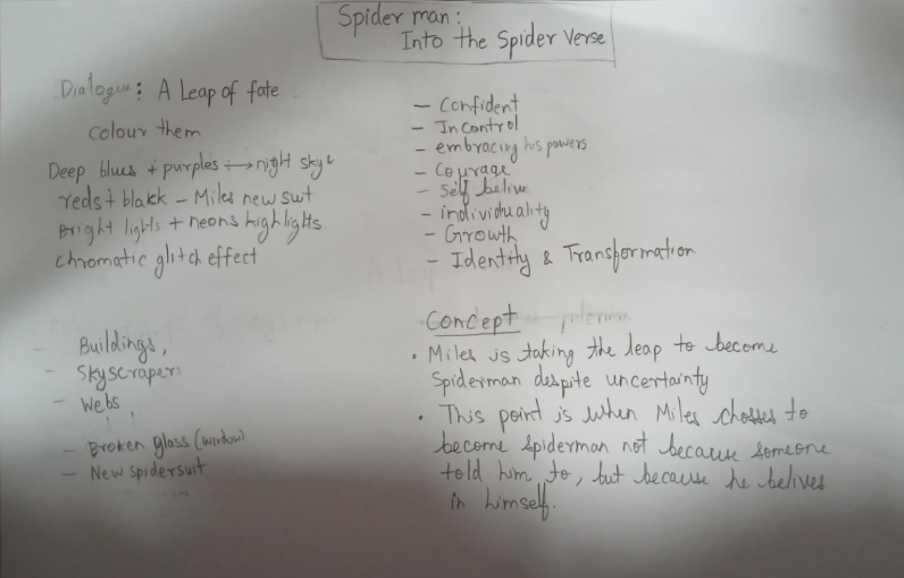
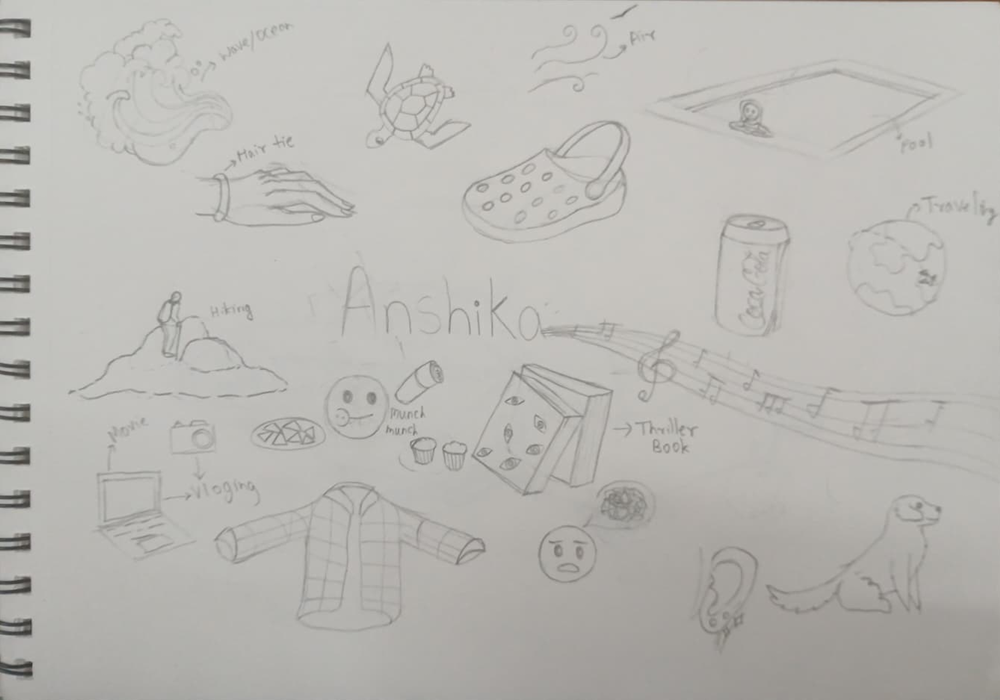

Ideation Phase

This is my ideation for my beauty and the beast poster

This is my ideation for my Spider-Man poster

This is my illustrated mindmaping for my friend portrait
This project evolved through continuous experimentation with narrative pacing, visual rhythm, and character expressiveness. Sketching, iteration, and motion testing helped refine the storytelling before arriving at the final graphic novel.
 For this Beauty and the beast poster, I took inspiration from the west wing scene.
For this Beauty and the beast poster, I took inspiration from the west wing scene.